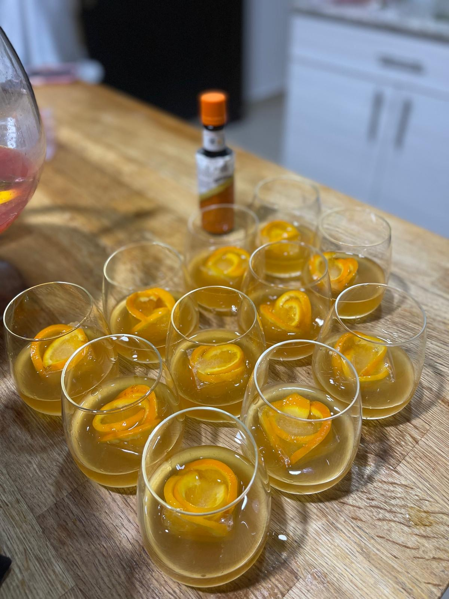

Christmas Sweater

Cozy yuletide sour
If an amaretto sour and a Christmas orange had a baby, it would be this delightful concoction.
Modesty, Christmas 2025
Ingredients
- 1 oz gin
- 1/2 oz amaretto
- Dash of orange bitters
- Splash of sour mix (Recipe below)
- Thin slices of orange for ice cubes
Steps
- Fold up thin slices of oranges and place each in a large ice cube tray. Fill with water and freeze
- Add an orange ice cube to lo-ball glass
- Add gin, amaretto, bitters and sour mix
- Stir gently and serve
Sour mix
- 3/4 cup water
- 1/4 cup sugar
- 3/4 cup lemon juice
- 3/4 cup lime juice
- Heat water and sugar until dissolved
- Remove from heat and add juices
Sour mix can be kept in the refrigerator for up to 2 weeks.
Return to home page